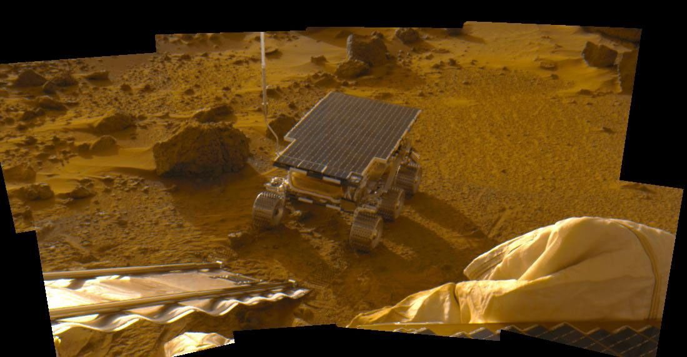
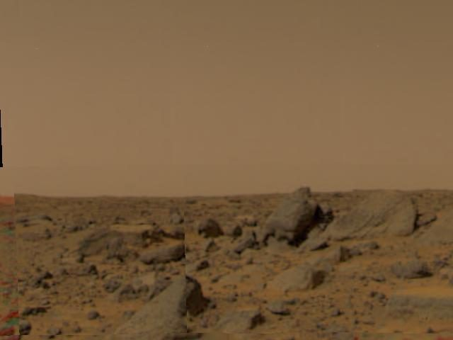
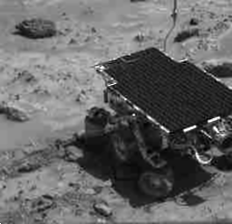

Sojourner Rover
A microwave-sized rover that proved wheels could work on Mars.
Mars1997Ares Vallis

At a glance
| Mass | 10.6 kg |
|---|---|
| Size | about 65 cm long |
| Top speed | about 1 cm per second |
| Instrument | Alpha Proton X-ray Spectrometer |
| Planned life | 7 sols |
Overview
Sojourner was operated with a delay: signals take minutes to travel between Earth and Mars, so the rover had to avoid hazards itself using laser stripes and cameras. Controllers sent a day's plan and received the results the next day. The same idea, a rover that thinks for itself between instructions, is how every later Mars rover works.
NASA’s Mars Pathfinder successfully demonstrated a new way to safely land on the Red Planet and deliver the first-ever robotic rover, Sojourner, to the Martian surface.
Where it began
Mars Pathfinder was a low-cost mission built to test cheap landing and driving technology after the Viking era. Sojourner rode on the lander and was named for abolitionist Sojourner Truth.
Mars Pathfinder was originally designed as a technology demonstration to deliver an instrumented lander and a free-ranging robotic rover to the surface of the Red Planet.
Both the lander and the 23-pound (10.6 kilogram) rover, Sojourner, carried instruments for scientific observations and to provide engineering data on the new technologies being demonstrated. Included were scientific instruments to analyze the Martian atmosphere, climate, geology, and the composition of its rocks and soil. Mars Pathfinder used an innovative method of directly entering the Martian atmosphere and landing.
The mission
Pathfinder bounced to a stop inside airbags on 4 July 1997. Sojourner rolled down a ramp days later to inspect rocks and soil.
Pathfinder used an innovative method of directly entering the Martian atmosphere, assisted by a parachute to slow its descent through the thin Martian atmosphere and a giant system of airbags to cushion the impact. It was the first time this airbag technique had been used.
At a speed of 31 mph (14 meters per second) and measuring 19 feet (5.8 meters) in diameter, Pathfinder bounced like a giant beach ball about 15 times, as high as 50 feet (15 meters), before coming to rest 2-1/2 minutes later about six-tenths of a mile (1 kilometer) from the point of initial impact.
The lander, named the Carl Sagan Memorial Station to honor the famed astronomer who had died the year before, deployed the rover, named Sojourner after American civil-rights crusader Sojourner Truth.
On the night of July 5, late in the second Martian day, or sol 2, Sojourner stood up to its full height of 1 foot (30 centimeters) and rolled down the lander’s rear ramp, which was tilted at 20 degrees from the surface, well within the limits of safe deployment.

The landing site, Ares Vallis (named for Ares, the Greek counterpart to the Roman god Mars, and the Latin word for valley), is an ancient flood plain in Mars’ northern hemisphere, and known as among the rockiest parts of the planet. It was chosen because scientists believed it to be a relatively safe surface to land on and one which contained a wide variety of rocks deposited during a catastrophic flood. In the event early in Mars’ history, scientists believe that the floodplain was cut by a volume of water the size of North America’s Great Lakes in about two weeks.

How it worked
A spectrometer pressed against rocks to measure chemistry, while cameras photographed the surroundings. Rock names such as Barnacle Bill and Yogi were chosen by the public.
Alpha Proton X-ray Spectrometer: Determined the elemental composition of rocks and soils
Three Cameras: Provided images of the surrounding terrain for geological studies, and documented the performance and operating environment for Pathfinder mission technologies
Atmospheric Structure Instrument/Meteorology Package: Measured the Martian atmosphere during Pathfinder's descent to the surface, and provided meteorological measurements at the lander

What it found
Rocks near the site were more varied than expected and showed evidence of ancient floods. Most importantly, it proved rovers could work, paving the way for Spirit, Opportunity, Curiosity and Perseverance.
Rounded pebbles and cobbles at the landing site, and other observations, suggested conglomerates that formed in running water during a warmer past in which liquid water was stable.
Radio tracking of Mars Pathfinder provided a precise measure of the lander's location and Mars' pole of rotation. The measurements suggested that the radius of the planet's central metallic core is greater than 800 miles (1,300 kilometers) but less than roughly 1,250 miles (2,000 kilometers).
Airborne dust is magnetic, and its characteristics suggest the magnetic mineral is maghemite, a very magnetic form of iron oxide, which may have been freeze-dried on the particles as a stain or cement. An active water cycle in the past may have leached out the iron from materials in the crust.
Dust devils were seen and frequently measured by temperature, and sensors for wind and pressure. Observations suggested that these gusts are a mechanism for mixing dust into the atmosphere.
Early morning water ice clouds were seen in the lower atmosphere.
Abrupt temperature fluctuations were recorded in the morning, suggesting that the atmosphere is warmed by the planet's surface, with heat convected upward in small eddies.
Why it was left behind
The mission was planned for a week, and lasted nearly three months. Contact was lost on 27 September 1997, probably due to a failed lander battery in cold weather.
From landing until the final data transmission on Sept. 27, 1997, Mars Pathfinder returned 2.3 billion bits of information, including more than 16,500 images from the lander and 550 images from the rover, as well as more than 15 chemical analyses of rocks and soil and extensive data on winds and other weather factors. Findings from the investigations carried out by scientific instruments on both the lander and the rover suggest that Mars was at one time in its past warm and wet.
Where it is now
Sojourner is parked beside its lander, now called the Carl Sagan Memorial Station.
The mission returned more than 16,000 pictures from the lander and hundreds from the rover, plus chemical analyses of rocks and soil. It also became a public phenomenon, with the mission website drawing huge crowds at the time. The rover itself was tiny, but it showed that a small, low-cost spacecraft could do real science on Mars.
Timeline of events
- 4 Dec 1996 Mars Pathfinder launches
- 4 Jul 1997 Landing by airbags in Ares Vallis
- 6 Jul 1997 Sojourner drives onto the surface
- 27 Sep 1997 Last transmission from Pathfinder
- 10 Mar 1998 NASA ends attempts to recover contact
1997
Last signal from the Pathfinder system, 27 September.
Read more on NASAText and images adapted from NASA mission pages.